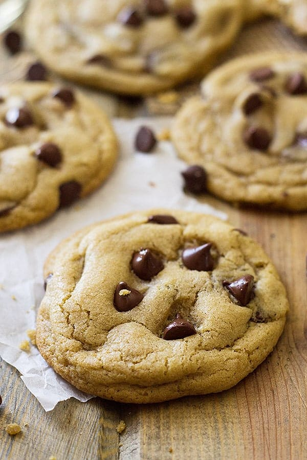

A recipe for soft chew chocolate chip cookies that can yield about 15 to 24 cookies, depending on the size.
- TIP - Remember the cookies will expand and grow as they bake, so make sure there is enough space between the cookies and that they will be your ideal size when fully baked.
- TIP - if you want the cookies to bake thicker, then you might want to use your fingers to shape the cookie to have a greater lenghth than width, similar to a cylinder
- TIP - when making the individual cookies by hand, remember in addition to proper sanitation, you should continously dust your hands with flour to avoid the dough from sticking too much to your hands.